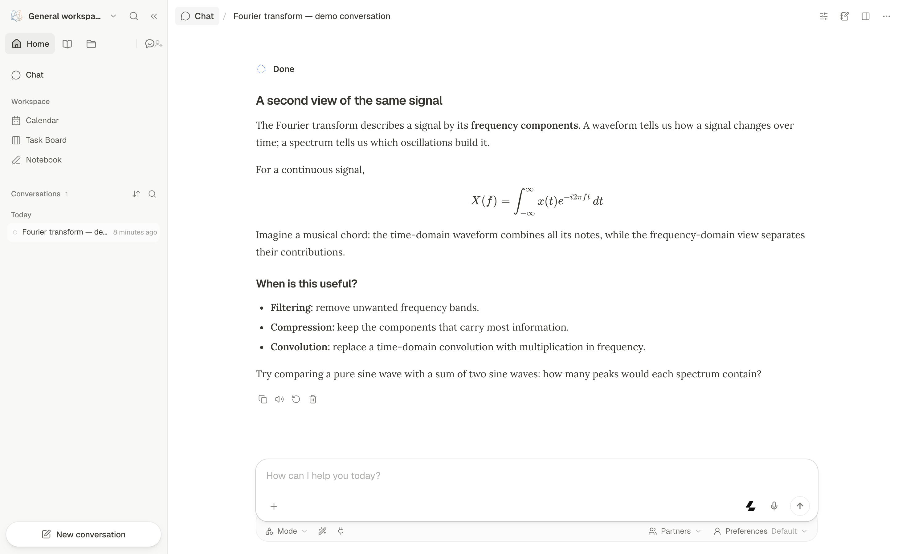

DeepTutor
A free AI tutor that reads your textbooks and teaches you from them - like a private tutor who never gets tired.
Upload a PDF or point it at a topic, and DeepTutor builds a lesson plan, explains concepts with examples, generates quizzes, and adapts to your level - running locally or in a browser with your own AI key.

How does it work?
You're studying a textbook or course material on your own, and there's no one to explain the hard parts, quiz you, or check whether you actually understand.
You upload a PDF, a textbook, or a set of notes into DeepTutor and ask a question.
Your study material (a PDF, notes, or a topic) and what you want to learn.
DeepTutor reads your material, builds understanding, and teaches you from it.
- Reads and indexes your documents so it can cite specific pages and sections
- Explains concepts using analogies and examples, adapting to your level (it starts simple and gets more detailed as you learn)
- Generates quizzes and practice problems from the material, with worked solutions
- Tracks what you've mastered and what needs more work in a 3-layer memory system
A personalized learning path through your own material.
- Explanations with math and visualsThe Fourier transform explained with the integral equation rendered, a musical-chord analogy, and 3 practical uses
- Quizzes from your material5 questions on Chapter 3, graded instantly with explanations for wrong answers
- A mastery trackerYou've mastered 12 of 18 concepts in Chapter 3 - here are 6 that need review
What changes for me?
Without it
- You read a textbook chapter and have no one to explain the parts you don't understand
- Searching online gives you generic explanations, not ones based on your specific course material
- Self-study has no quizzes, no feedback, and no way to know what you've actually learned
With it
- An AI tutor that has read your actual textbook and explains from it, with rendered math and analogies
- Quizzes generated from your material, graded instantly with worked solutions
- A mastery tracker that knows what you've studied and what to review next
How hard is it to try?
Effort
- Quickest trial: run
docker run -p 3782:3782 ghcr.io/hkuds/deeptutor:latestand open http://127.0.0.1:3782 in your browser - In Settings, add an AI provider (OpenAI, Anthropic, or a local model via Ollama - bring your own key)
- Upload a PDF or paste a topic, then ask a question - DeepTutor will read the material and teach you from it. Try 'Quiz me on Chapter 1' to see quiz generation
What it takes on your computer
- Space on disk
- The Docker image size is no data found. The Python install (
pip install deeptutor[full]) pulls Python and Node.js dependencies. - Memory while it runs
- Depends on the AI model you choose. With a cloud provider (OpenAI, Anthropic), the app itself uses moderate memory. With a local model via Ollama, you need enough RAM for the model.
- Runs on
- Mac, Windows, or Linux. Needs Python 3.11-3.14 and Node.js 20+. Docker is the easiest path. A cloud AI key (OpenAI, Anthropic, etc.) or a local model server (Ollama, LM Studio) is required.
Paste this into Claude Code. It runs your safety scan first, then a 10-minute test.
/skillspector https://github.com/HKUDS/DeepTutor Then: Install with `pip install -U 'deeptutor[full]'`, run `deeptutor init` and `deeptutor start`, open the browser, configure a model provider in Settings, and upload a PDF to try.
Should I?
Great if you...
- Students studying from textbooks who want an AI tutor that actually reads their material
- Self-learners who want quizzes and mastery tracking, not just chat
- Anyone who learns better from explanations with analogies, rendered math, and follow-up questions
Skip it if...
- You need a tutor for hands-on subjects (lab work, physical skills) - DeepTutor works on text and documents
- You want a simple chatbot - DeepTutor's feature set is large and takes time to learn
- You're not comfortable with Docker or pip install and providing an API key
Instead, you could look at
- NotebookLMGoogle's free tool that reads your documents and answers questions about them - simpler but no quizzes or mastery tracking
- AnkiThe gold standard for spaced-repetition flashcards - proven method, but you create the cards yourself
Is it safe?
- Security advisories: 0GitHub's advisory list, checked Oct 30
- Searches for CVEs, vulnerabilities, malware and scams3 results read, including the national CVE database: nothing found
- Are the stars earned?51.3K stars, 236 contributors, 3.2K commits
Watch out for
- You need an AI key or local model. DeepTutor is the interface - the actual AI brain comes from your own OpenAI, Anthropic, or Ollama setup. The quality depends on which model you choose and pay for.
- Academic research project. Built by the HKUDS lab at Hong Kong University. The companion paper is on arXiv (2604.26962). Development pace may follow academic cycles, not commercial roadmaps.
- Large feature surface. The project has chat, quizzes, research, visualization, mastery paths, video lessons, notebooks, and more. Some features may be rough or experimental.
- Apache 2.0 license. Open source, free for commercial and personal use.
Who's using it, and for what?
DeepTutor is about 10 months old and has 51K stars. It comes from an academic research lab (HKUDS at Hong Kong University). Independent reviews are thin - most discussion is on tech sites rather than education forums.
We couldn't find anyone describing real use of it yet. That's normal for a brand-new repo, and it's worth knowing.
Who's talking about it
- GitHub TrendingTrending daily, weekly, and monthly
- TrendshiftTrending daily (rank 5)
- findarepoListed in Oct 30 digest (rank 9)
Sources
- DeepTutor GitHub, Oct 30
- DeepTutor documentation, Oct 30